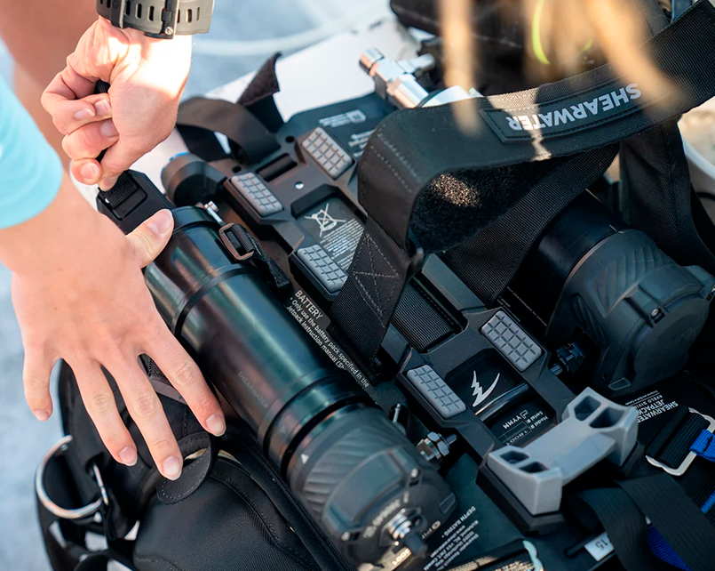
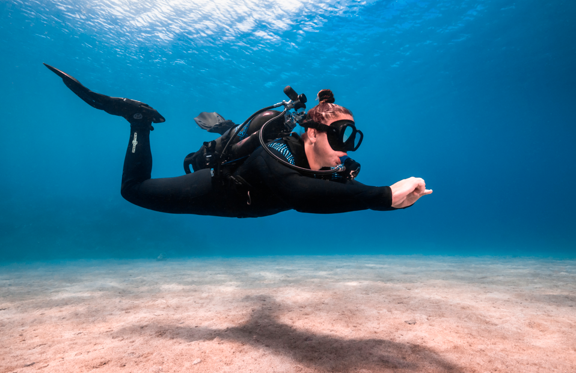
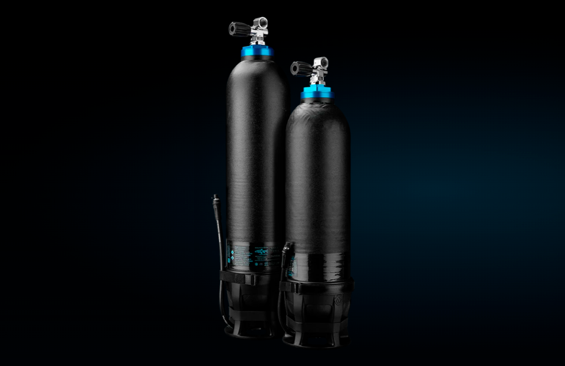
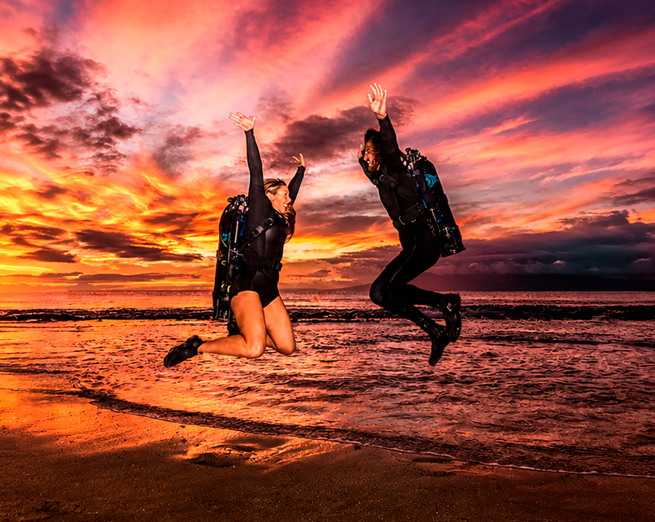
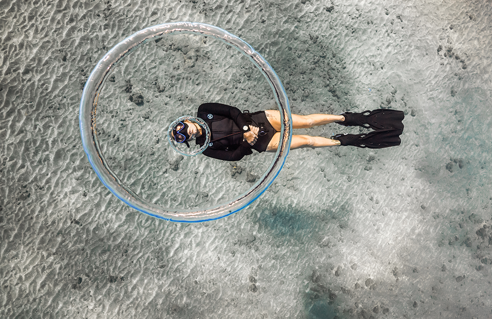
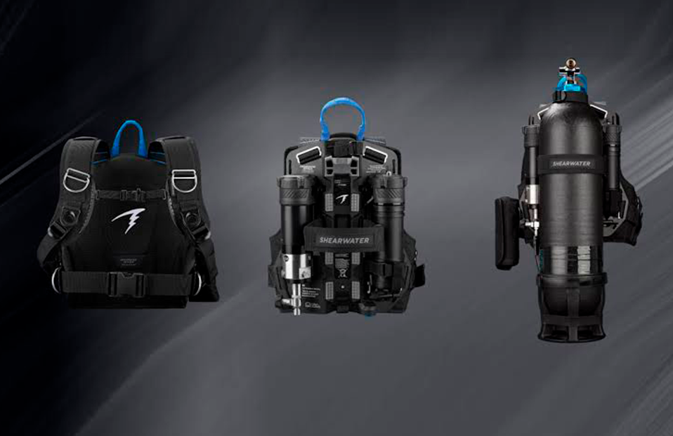
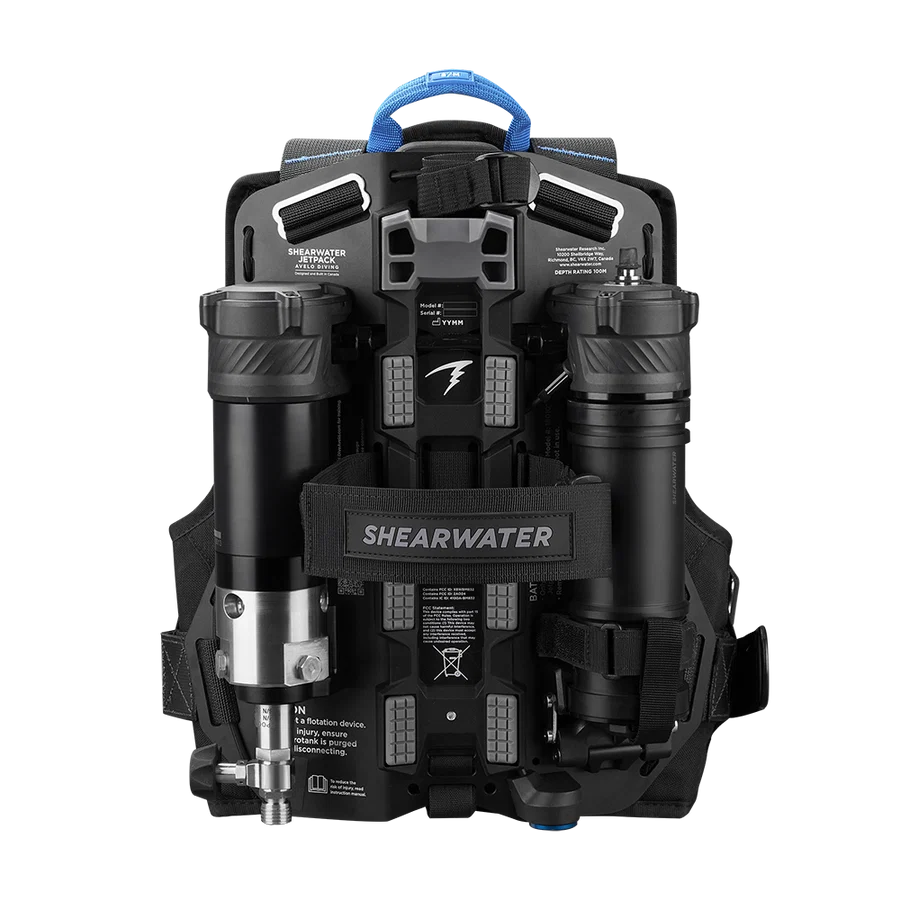
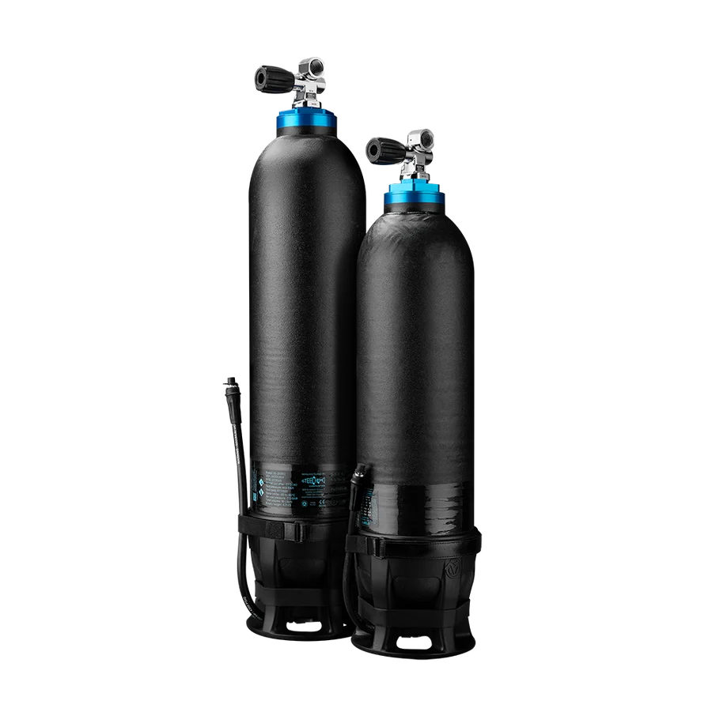

Tecnología de punta diseñada para ofrecerte control, comodidad y una experiencia submarina sin precedentes.
El sistema utiliza agua para ajustar tu flotabilidad. A diferencia del aire, el agua no se comprime ni se expande con los cambios de profundidad, reduces la necesidad de correcciones constantes.
El Hydrotank es de fibra de carbono y otros componentes, hasta 6 kg menos frente al tanque convencional y se reduce el lastre de manera importante al reemplazarlo por agua a demanda.
Cuenta con tecnología de información y monitoreo con el Avelo Mode, proporciona información en tiempo real sobre la zona de flotabilidad neutra, carga de trabajo y eficiencia del sistema. Puedes medir tu desempeño y mejorarlo.
Siéntete como si fueras parte del agua, a diferencia de un chaleco de buceo tradicional, este sistema no contiene burbujas de aire sensibles a la profundidad. El resultado es una flotabilidad neutra excepcionalmente estable a pesar de los cambios de profundidad.
Aprender a bucear con Avelo no consiste simplemente en cambiar de equipo. Es aprender una nueva manera de entender y controlar tu flotabilidad.
Comienza con la teoría. Familiarízate con los fundamentos del sistema Avelo. Solo 2 horas aproximadamente.
Aprende con tu instructor cómo funcionan el Hydrotank, el Jetpack y la computadora en detalle.
Desarrolla las habilidades para controlar tu flotabilidad. Desde tu primer inmersión sentirás la diferencia.
Recibe tu certificación digital reconocida internacionalmente en los Avelo Dive Centers.
Tu aprendizaje no termina con la certificación. La mejor manera de incorporar una nueva forma de bucear es seguir practicando.






Avelo Essentials consta de un aprendizaje online, una explicación detallada sobre el uso del sistema y 2 inmersiones en el mar.
Una vez que hayas aprendido a utilizar Avelo, queremos que sigas explorando.
Inmersiones recreativas utilizando el sistema Avelo.
Paquetes de inmersiones para que puedas seguir practicando con el sistema.
Viajes y expediciones de buceo para explorar nuevos destinos utilizando Avelo.
El equipo con el que vivirás la experiencia Avelo en cada inmersión.

SHEARWATER
JETPACK
Experimenta la libertad del buceo con el sistema Avelo Jetpack de Shearwater, que cuenta con un cómodo chaleco y arnés de tela, además de un sistema electrónico mejorado.

HYDROTANK
El Hydrotank es un cilindro ligero que permite a los buceadores ajustar su flotabilidad añadiendo o extrayendo agua de la cámara interna del propio tanque, logrando así una flotabilidad estable a lo largo de todo el perfil de inmersión.
Creemos que el buceo también puede y debe evolucionar.
Apostamos por Avelo y ponemos esta nueva tecnología a disposición de nuestra comunidad de buzos, somos los primeros en Perú y en Sudamérica.
No se trata simplemente de un equipo nuevo. Se trata de experimentar el buceo de una manera diferente.
¡Descubre Avelo HOY!